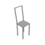
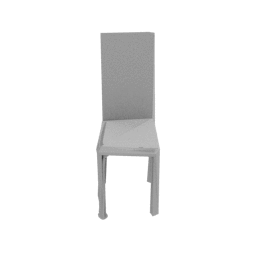
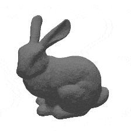
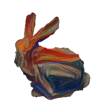
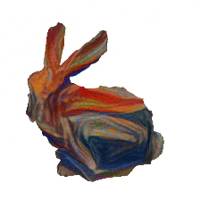
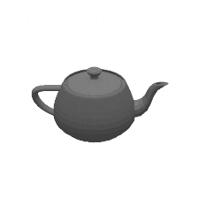
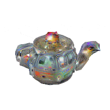

Neural 3D Mesh Renderer Hiroharu Kato, Yoshitaka Ushiku, and Tatsuya Harada The University of Tokyo, RIKEN
3D Mesh Reconstruction
 2D-to-3D Style Transfer
 

3D DeepDream
 Abstract
-
An approximate gradient for rasterization that enables the integration of rendering into neural networks.
-
Single-image 3D mesh reconstruction with silhouette image supervision.
-
Gradient-based 3D mesh editing operations, such as 2D-to-3D style transfer and 3D DeepDream, with 2D supervision.
Model Loader
<script src="three/examples/js/loaders/GLTFLoader.js"></script>
var objloader = new THREE.GLTFLoader();
objloader.load( "3Dmodel.glb", function( gltf ) {
mesh = gltf.scene;
mesh.scale.set(10000, 10000, 10000);
scene.add( mesh );
})
ApolloScape 79 Car 3D Mesh
ApolloScape 3D Car Understanding
Thanks, Di Wu
/